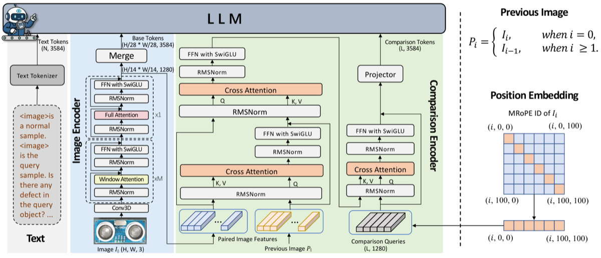
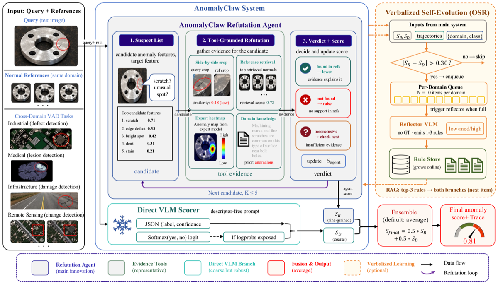
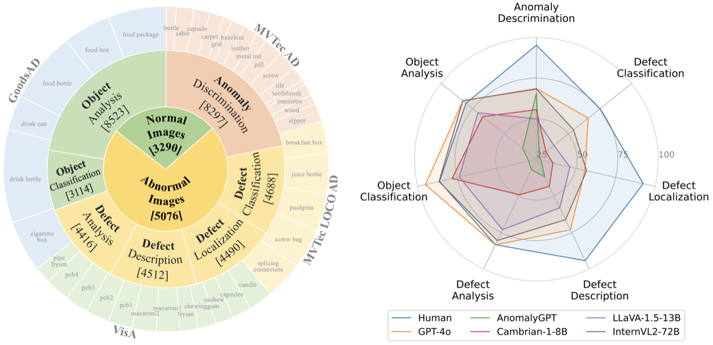
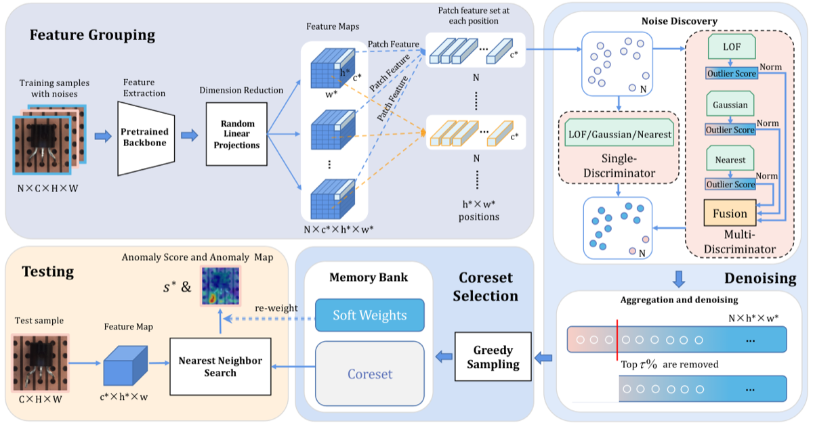
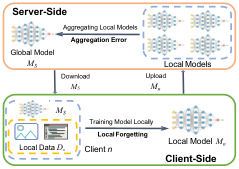
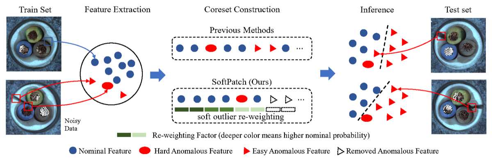

Released our survey on recent advances in industrial anomaly detection.
About
I am a Ph.D. candidate in Computer Science at the Southern University of Science and Technology (SUSTech), advised by Prof. Feng Zheng.
My research focuses on industrial anomaly detection, multimodal foundation models, and embodied AI. I aim to build inspection systems that can compare visual evidence, explain anomalies, and actively acquire useful observations.
I was a visiting Ph.D. student at A*STAR IHPC–CFAR in Singapore, supervised by Joey Tianyi Zhou, and previously worked as a research intern at Tencent YouTu Lab and Huawei.
Robust detection
→
Multimodal reasoning
→
Embodied inspection
News
Selected updatesAnomalyClaw preprint and code were released.
AD-Copilot preprint and code were released.
SoftPatch+ appeared in Pattern Recognition.
MMAD was accepted to ICLR 2025.
Received the National Scholarship for Doctoral Students and the SUSTech Special Scholarship.
Received an Honorable Mention in the CVPR VAND 2.0 Challenge; our image customization work was accepted to ECCV 2024.
Our Bayesian federated learning work was accepted by IEEE TPAMI.
SoftPatch was accepted to NeurIPS 2022.
Publications
View all* Equal contribution. Unaccepted work is listed only when I am first or co-first author.

AD-Copilot: A Vision-Language Assistant for Industrial Anomaly Detection via Visual In-context Comparison
A comparison-aware multimodal assistant that learns fine-grained anomaly perception and explanation from paired visual evidence.
AAAI 2027 submission
Embodied-AD: Industrial Anomaly Detection through Robotic View Acquisition
Frames inspection as active robotic perception, using normal 3D Gaussian templates for pose-aligned reference rendering and view selection.

AnomalyClaw: A Universal Visual Anomaly Detection Agent via Tool-Grounded Refutation
A training-free anomaly agent that challenges its first judgment through multi-turn, tool-grounded refutation.
Preprint · 2026Paper
A Survey of Recent Advances in Industrial Anomaly Detection: From Normal-Only Training to Foundation-Model Priors
Organizes recent progress into five foundation-model-driven generalization mechanisms and outlines open challenges.
NeurIPS submission · 2026Paper
UniPCB: A Unified Vision-Language Benchmark for Open-Ended PCB Quality Inspection
A unified PCB inspection benchmark and progressive curriculum for domain-specialized multimodal reasoning.
TNNLS minor revision · 2026Paper
Mastering Negation: Boosting Grounding Models via Grouped Opposition-Based Learning
Introduces positive–negative semantic groups and opposition-based objectives for negation-aware visual grounding.

MMAD: The Comprehensive Benchmark for Multimodal Large Language Models in Industrial Anomaly Detection
A comprehensive benchmark covering anomaly discrimination, localization, description, object analysis, and defect reasoning.

SoftPatch+: Fully Unsupervised Anomaly Classification and Segmentation
Extends patch-level denoising with multiple discriminators for robust fully unsupervised inspection under high noise ratios.
Tuning-Free Image Customization with Image and Text Guidance
A tuning-free diffusion framework for precise local customization jointly guided by reference images and text.
Preprint · 2024Paper
Toward Multi-class Anomaly Detection: Exploring Class-aware Unified Model against Inter-class Interference
MINT-AD learns class-aware query embeddings to reduce inter-class interference in a unified anomaly detector.

A Bayesian Federated Learning Framework with Online Laplace Approximation
Approximates client and server posteriors online to reduce aggregation error and local forgetting under heterogeneous data.

SoftPatch: Unsupervised Anomaly Detection with Noisy Data
A patch-level noise discriminator and soft-weighted coreset that make normal-only anomaly detection robust to contaminated training data.
Experience & education
Experience
- A*STAR, Singapore Visiting Ph.D. Student · IHPC–CFAR
- Tencent YouTu Lab Research Intern · Industrial AI
- Huawei Research Intern · Continual learning
Education
- Ph.D. in Computer Science SUSTech
- M.Sc. in Computer Science SUSTech
- B.Sc. in Computer Science Xi’an Jiaotong University
Honors & service
- National Scholarship for Doctoral Students
- SUSTech Special Scholarship
- CVPR VAND 2.0 Challenge — Honorable Mention
- Outstanding Graduate Student Award
- Reviewer for ICLR, NeurIPS, CVPR, ICCV, ECCV, CoRL, ACM MM, WACV, and more
For research collaboration or open-source work, email jiangx2020@mail.sustech.edu.cn.